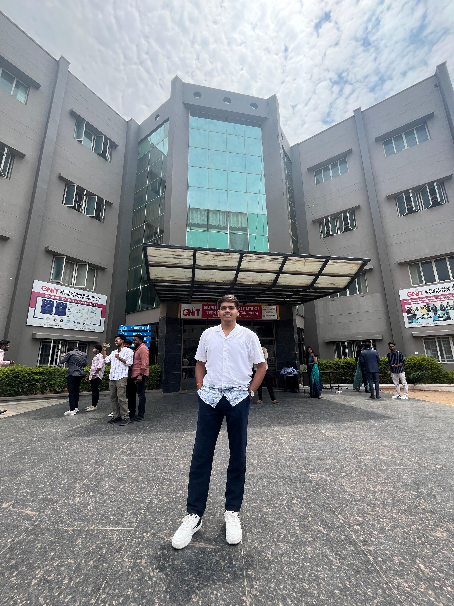

CS graduate specialising in AI & Data Science, currently working as AI-ML intern at C-DAC Thiruvananthapuram. I build deep learning solutions for real-world problems — from Sign Language recognition to intelligent document analysis.

About Me
I'm Gundumalla Sthana Sriharsha, a Computer Science graduate specialising in AI & Data Science from GNIT, Hyderabad (Class of 2025).
Currently an AI/ML Intern at C-DAC Thiruvananthapuram, working on deep learning approaches for Indian Sign Language (ISL).
My passion is bridging research and real applications.
Technical Skills
Technologies and tools I've used across projects and internships.
Experience
Internships and training that shaped my skills.
Exploring deep learning approaches for building the AI models for Indian Sign Language (ISL). Collaborating with technical teams on research-oriented projects and developing AI-driven solutions for accessibility.
Completed an intensive AI-ML training under the Google for Developers initiative endorsed by AICTE. Worked on ML fundamentals, model evaluation, and deploying ML models in production-ready environments.
Projects
Python-based system to improve quality of nighttime roadside images for intelligent transportation. Implements bidirectional area segmentation-based inverse tone mapping. Deployed as a Flask web app with real-time processing.
Web-based AI assistant for intelligent document analysis with contextual Q&A and auto-summarization. Powered by Google gemini for deep document understanding and context retention across multi-turn conversations.
Developed a pose normalization pipeline to standardize human keypoints extracted from video data, improving consistency across different scales, positions, and viewing angles.
Developed an NLP-based system that detects ambiguous words in a sentence and determines their correct meaning using contextual understanding. The system also evaluates specific words by assigning relevance and quality scores, improving semantic interpretation and language analysis. Deployed as an interactive web application using Hugging Face Spaces.
Certifications
Recognized training from global technology organizations.
Contact
Open to full-time roles, internships, and research collaborations in AI/ML. Don't hesitate to reach out!
sthanasriharsha@gmail.com